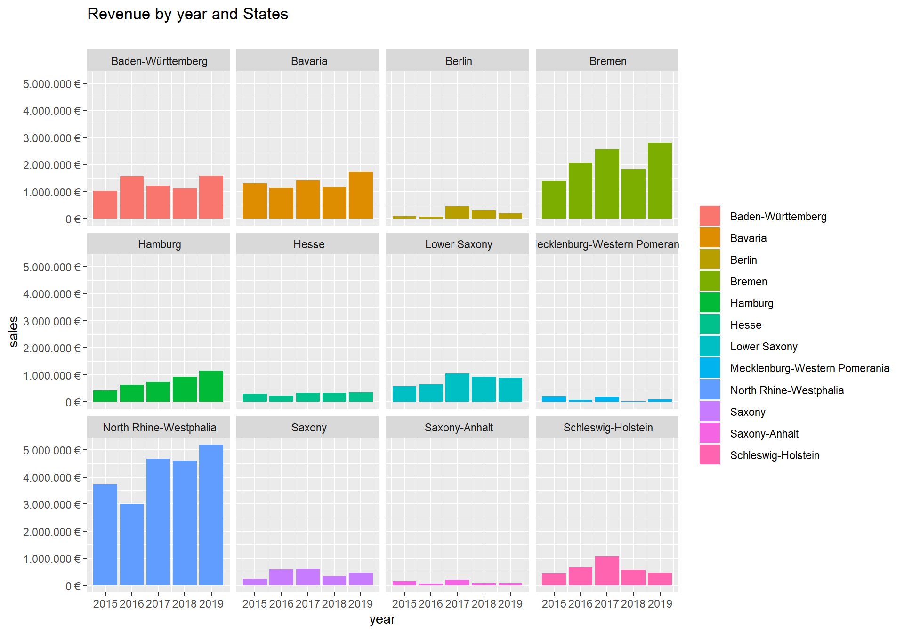
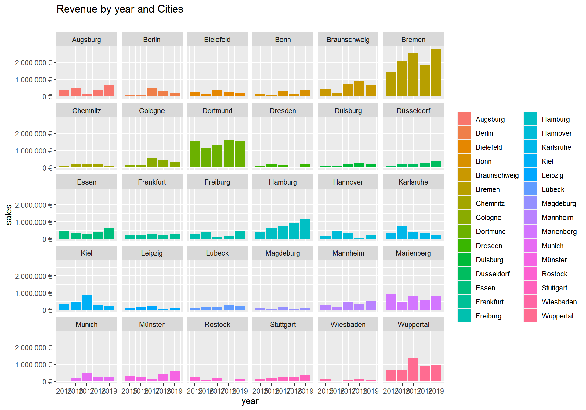

#Chapter 2 – first Challange
Last compiled: 2020-11-30
The sales data of a company in the bicycle sales sector were analyzed for the period from 2015 to 2019 and the results were presented in diagrams. The sales in different categories were considered, as well as the sales that were made across the Federal Republic of Germany. These sales were shown across states and cities.
# 1.0 Load libraries ----
library(tidyverse)
library(readxl)
library(lubridate)
library(writexl)
# 2.0 Importing Files ----
bikes_tbl <- read_excel(path = "DS_101/00_data/01_bike_sales/01_raw_data/bikes.xlsx")
orderlines_tbl <- read_excel("DS_101/00_data/01_bike_sales/01_raw_data/orderlines.xlsx")
bikeshops_tbl <- read_excel("DS_101/00_data/01_bike_sales/01_raw_data/bikeshops.xlsx")
# 3.0 Examining Data ----
# 4.0 Joining Data ----
bike_orderlines_joined_tbl <- orderlines_tbl %>%
left_join(bikes_tbl, by = c("product.id" = "bike.id")) %>%
left_join(bikeshops_tbl, by = c("customer.id" = "bikeshop.id"))
#6.3 Sales by State
sales_by_state_tbl <- bike_orderlines_wrangled_tbl %>%
select(order_date, total_price, state) %>%
mutate(year = year(order_date)) %>%
group_by(year, state) %>%
summarise(sales = sum(total_price)) %>%
ungroup() %>%
mutate(sales_text = scales::dollar(sales, big.mark = ".",
decimal.mark = ",",
prefix = "",
suffix = " €"))
sales_by_state_tbl %>%
ggplot(aes(x = year, y = sales, fill = state)) +
geom_col() +
facet_wrap(~ state) +
scale_y_continuous(labels = scales::dollar_format(big.mark = ".",
decimal.mark = ",",
prefix = "",
suffix = " €")) +
labs(
title = "Revenue by year and States",
subtitle = "",
fill = "" # Changes the legend name
+ theme(axis.text.x = element_text(angle = 45, hjust = 1))
)
#6.4 Sales by City
sales_by_city_tbl <- bike_orderlines_wrangled_tbl %>%
select(order_date, total_price, city) %>%
mutate(year = year(order_date)) %>%
group_by(year, city) %>%
summarise(sales = sum(total_price)) %>%
ungroup() %>%
mutate(sales_text = scales::dollar(sales, big.mark = ".",
decimal.mark = ",",
prefix = "",
suffix = " €"))
sales_by_city_tbl %>%
ggplot(aes(x = year, y = sales, fill = city)) +
geom_col() +
facet_wrap(~ city) +
scale_y_continuous(labels = scales::dollar_format(big.mark = ".",
decimal.mark = ",",
prefix = "",
suffix = " €")) +
labs(
title = "Revenue by year and Cities",
subtitle = "",
fill = "" # Changes the legend name
+ theme(axis.text.x = element_text(angle = 45, hjust = 1))
) #Chapter 3 Last compiled: 2020-11-30
Data Aquisition via an API. I used the Quandl Data Provider to get access to their API. The Data is the Electricity generation in Germany from 1985 until The Data is presented as a list with the Year in one column and the produced electricity in gigawatthours in the second column.
library(httr)
library(jsonlite)
library(tidyverse)
resp <- GET("https://www.quandl.com/api/v3/datasets/BP/ELEC_GEN_DEU.json?api_key=3fzuzvof5E_4V2rs-WWm")
resp %>%
.$content %>%
rawToChar() %>%
fromJSON()
dataset data [,1] [,2]
[1,] “2018-12-31” “648.7”
[2,] “2017-12-31” “653.6547”
[3,] “2016-12-31” “650.70734396” [4,] “2015-12-31” “648.14928057” [5,] “2014-12-31” “627.76510177” [6,] “2013-12-31” “638.73”
[7,] “2012-12-31” “630.149”
[8,] “2011-12-31” “613.070326”
[9,] “2010-12-31” “633.093”
[10,] “2009-12-31” “595.624”
[11,] “2008-12-31” “640.686”
[12,] “2007-12-31” “640.578”
[13,] “2006-12-31” “639.5665”
[14,] “2005-12-31” “622.575”
[15,] “2004-12-31” “617.4652”
[16,] “2003-12-31” “608.78”
[17,] “2002-12-31” “586.688”
[18,] “2001-12-31” “586.4115”
[19,] “2000-12-31” “576.556”
[20,] “1999-12-31” “556.301”
…..
#Chapter 4
For the solution of Chapter 4 i preferred the dplyr package. At first all the data neets to be imported. I used the vroom package for doing this.
library(vroom)
library(tidyverse)
library(lubridate)
library(data.table)
#import assignee Table
col_types_assignee <- list(
id = col_character(),
type = col_double(),
name_first = col_character(),
name_last = col_character(),
organization = col_character()
)
assignee_tbl <- vroom(
file = "assignee.tsv",
delim = "\t",
col_types = col_types_assignee,
na = c("", "NA", "NULL")
)
#import patent_assignee table
col_types_patent_assignee <- list(
patent_id = col_character(),
assignee_id = col_character(),
location_id = col_character()
)
patent_assignee_tbl <- vroom(
file = "patent_assignee.tsv",
delim = "\t",
col_types = col_types_patent_assignee,
na = c("", "NA", "NULL")
)
#import patent table
col_types_patents <- list(
id = col_character(),
type = col_character(),
number = col_character(),
country = col_character(),
date = col_date("%Y-%m-%d"),
abstract = col_character(),
title = col_character(),
kind = col_character(),
num_claims = col_double(),
filename = col_character(),
withdrawn = col_double()
)
patent_tbl <- vroom(
file = "patent.tsv",
delim = "\t",
col_types = col_types_patents,
na = c("", "NA", "NULL")
)After importing the Data. It needs to be reshaped and joint. Because I need som colums of every dataset but not all of them for the Solution.
The first task is to find out which company has the most patents in the US.
# first attend with dplyr
#sort the patent table by the assignees with the most patents
patent_summary_tbl <- patent_assignee_tbl %>% select(patent_id,assignee_id)
most_patents <- patent_summary_tbl %>%
group_by(assignee_id) %>%
summarise(
count = n()
) %>%
ungroup() %>%
arrange(desc(count))
assignee_summary_tbl<-assignee_tbl %>% select(id,organization)
#save only the first 5000 assignees with the most patents ant join the Companies
#to the assignee IDs
most_patents <- most_patents %>%
slice(1:(nrow(.)/100)) %>%
left_join(y=assignee_summary_tbl, by = c("assignee_id"="id"))
most_patents %>% select(count,organization)List of the companies with the most total patents:
count organization
1 139091 International Business Machines Corporation 2 93561 Samsung Electronics Co., Ltd.
3 75909 Canon Kabushiki Kaisha
4 54342 Sony Corporation
5 49442 Kabushiki Kaisha Toshiba
6 47121 General Electric Company
7 45374 Hitachi, Ltd.
8 42156 Intel Corporation
9 37196 Fujitsu Limited
10 35572 Hewlett-Packard Development Company, L.P.
The second task is to find out which company handed in the most patents in 2019.
patent_summary_2019 <- patent_tbl %>%
select(id,date) %>%
mutate(year=year(date)) %>%
mutate(amount=1)%>%
left_join(y=patent_summary_tbl, by = c("id"="patent_id")) %>%
left_join(y=assignee_summary_tbl, by = c("assignee_id"="id"))
glimpse(patent_summary_2019)
class(patent_summary_2019)
setDT(patent_summary_2019)
list_2019 <- patent_summary_2019[year == 2019,sum(amount),organization]
list_2019 %>% arrange(desc(V1))List of the companies with the most patents in 2019: organization V1 1: